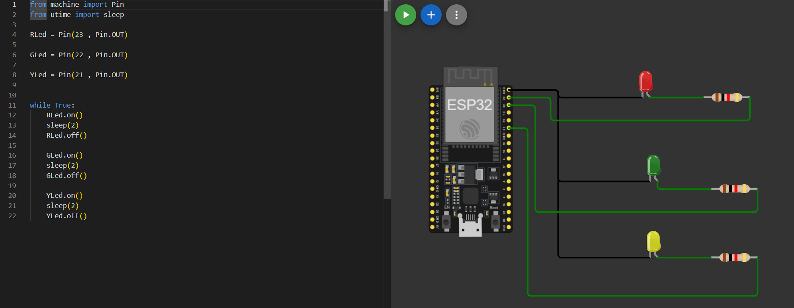
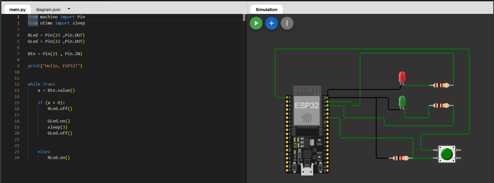

🎯 مقدمة
"إحنا في الأسابيع اللي فاتت بدأنا الرحلة من أول الكهرباء،
واتعرفنا إزاي الدواير الكهربائية بتنقل الإشارات. وبعدها دخلنا على
Computer Architecture وفهمنا إزاي الكمبيوتر بيفكر
باستخدام الـ Binary والـ Logic Gates والـ
Processor.
لكن كان فيه سؤال مهم...
كل الحاجات دي بنستخدمها في إيه؟
وده اللي هنبدأ نجاوب عليه من النهارده.
هنشوف إزاي الأفكار دي كلها بتتجمع علشان تعمل أجهزة ذكية بنستخدمها كل يوم، وده هو عالم Embedded Systems."
"احنا عارفين اي هو الكمبيوتر العادي، زي اللاب توب أو الكمبيوتر المكتبي اللي هو ال pc.
الكمبيوتر ده يقدر يعمل حاجات كتير جدًا، زي تشغيل ألعاب، كتابة ملفات، تصفح الإنترنت، وبرمجة.
لكن في نوع تاني اسمه Embedded System.
الـ Embedded System برضه يعتبر Computer، لكن معمول علشان ينفذ وظيفة واحدة أو شوية وظائف محددة جدًا، وبيكون موجود جوا جهاز أكبر."
🔄 Transition
"دلوقتي بعد ما عرفنا يعني إيه
Embedded System، نشوف هو موجود فين حوالينا."
"ناس كتير فاكرة إن الـ Embedded Systems موجودة بس في المصانع، لكن الحقيقة هي موجودة في كل مكان.
🏠 في البيت:
الميكروويف، الغسالة، التليفزيون الذكي، والتكييف.
يعني غسالة الملابس فيها Embedded System يتحكم في الغسيل، لكن هو مش معمول علشان تفتح عليه YouTube أو تلعب ألعاب.
تليفزيون سمارت بيكون فيه كمبيوتر صغير يشغل التطبيقات ويتصل بالإنترنت
🏥 في المستشفيات:
أجهزة مراقبة المريض، منظمات ضربات القلب، وأجهزة المحاليل.
نظم ضربات القلب جهاز إلكتروني صغير يساعد القلب يحافظ على ضرباته الطبيعية.
🚗 في المواصلات:
العربيات، إشارات المرور، الطيارات بدون طيار، والقطارات.
الـ self driving cars او عربيات القيادة الذاتية دي عربية تستخدم حساسات وبرامج علشان تتحرك من غير سواق
الدرون او الطيارة بدون طيار دي طيارة بتطير باستخدام Embedded System وبرامج تحكم
🤖 وفي الروبوتات:
ذراع الروبوت، والروبوت اللي بينضف الأرض.
كل الأجهزة دي فيها كمبيوتر صغير بيعمل وظيفة محددة."
❓ Quick Interaction
"حد يقدر يعدلي 3 أجهزة في البيت فيها Embedded
Systems؟"
🔄 Transition
"طيب إيه اللي يخلي الجهاز ده اسمه
Embedded System أصلاً؟"
🎯 مقدمة
دلوقتي هنشوف المكونات الأساسية اللي لازم تكون موجودة في
أي Embedded System.
"أي Embedded System غالبًا بيتكون من أربع حاجات.
👀 أول حاجة الـ Input.
وده المكان اللي الجهاز بياخد منه معلومات، زي زرار أو Sensor.
وال sensor ده جهاز بيحس بالبيئة حواليه زي مستشعرالحرارة او الرطوبة او المسافات والبعد والقرب.
🧠 بعد كده الـ
Processing.
وده المخ بتاع الجهاز، ممكن يكون Microcontroller أو Processor.
الجزء اللي بيفكر ويقرر الجهاز هيعمل إيه.
🌍 مثال: المدرس بياخد السؤال ويفكر قبل ما يجاوب.
لفرق بين ال بروسيسور وال micro controler
دي من أهم الأسئلة اللي الطلبة بيسألوها، وشرحها بسيط جدًا.
| 💻 Processor (CPU) | 🤖 Microcontroller (MCU) |
| هو المخ اللي بيحسب وينفذ الأوامر فقط. | هو كمبيوتر صغير كامل على شريحة واحدة. |
| محتاج RAM وStorage ومكونات تانية تشتغل معاه. | فيه Processor + Memory + GPIO + مكونات تانية جواه. |
| بيستخدم في اللابتوب والكمبيوتر والموبايل. | بيستخدم في الأجهزة الذكية والمشاريع الإلكترونية. |
| قوي جدًا وسريع. | أبطأ، لكنه كفاية للتحكم في الأجهزة. |
| يستهلك طاقة أكبر. | موفر جدًا في الكهرباء. |
🎒 Processor
تخيل عندك مدير شاطر جدًا، لكنه معندوش
مكتب ولا أوراق ولا تليفون. هيحتاج ناس وأدوات حواليه عشان
يشتغل.
🤖 Microcontroller
أما الـ Microcontroller فهو المدير ومعاه المكتب
والأوراق
والتليفون في نفس المكان. كل
حاجة جاهزة، فيقدر يبدأ الشغل فورًا.
⚙️ بعد كده Program.
وده البرنامج او مجموعة أوامر بتقول للجهاز يعمل وإمتى."
الفرق بين ال processor وال program
ده سؤال مهم جدًا، والطلبة فعلًا بيلخبطوا بين الاتنين.
| 🧠 Processor | 💻 Program |
| جزء هاردوير (قطعة إلكترونية). | جزء سوفت وير (كود أو تعليمات). |
| هو اللي ينفذ الأوامر. | هو الأوامر اللي هننفذها. |
| موجود داخل الـ ESP32 أو الكمبيوتر. | بنكتبه إحنا باستخدام لغة برمجة زي MicroPython. |
| من غير Program مش هيعرف يعمل حاجة. | من غير Processor مفيش حد ينفذه. |
💻 Program
"الـ Program هو
مجموعة تعليمات بنكتبها علشان نقول للجهاز يعمل إيه."
مثال:
شغل الـ LED.
استنى ثانية.
اطفي الـ LED.
دي كلها أوامر موجودة في البرنامج.
🧠 Processor
"أما الـ Processor فهو العامل أو المخ اللي بيقرأ
الأوامر
دي وينفذها."
يعني هو مش بيكتب البرنامج، هو بينفذه.
👨🍳 تخيل مطعم.
📄 Program = وصفة الأكل.
👨🍳 Processor = الشيف.
الوصفة بتقول:
حط ملح.
حط فلفل.
اطبخ 10 دقائق.
لكن اللي بينفذ الخطوات دي هو الشيف.
💻 وآخر حاجة Output.
وده اللي الجهاز بيعمله بعد ما يفكر، زي يشغل موتور أو ينور LED أو يطلع صوت من Buzzer أو يعرض حاجة على شاشة.
❓ Quick Interaction
"لو عندنا باب أوتوماتيك، إيه ممكن يكون
الـ Input؟ وإيه الـ Output؟"
🔄 Transition
"دلوقتي هنشوف مثال كبير بيستخدم كل
المكونات دي مع بعض."
🎯 مقدمة
بعد ما عرفنا مكونات الـ Embedded System،
نشوف الروبوت بيستخدمها إزاي.
"الروبوت هو جهاز ذكي يقدر يعمل 3 خطوات دايمًا.
👀 أول خطوة يستقبل معلومات من البيئة حواليه.
🧠 بعد كده يعالج المعلومات ويفكر.
⚙️ وفي الآخر ينفذ حركة أو قرار.
وده بالظبط نفس اللي اتكلمنا عنه في السلايد اللي
فات:
Input → Processing → Output.
ومن أمثلة الروبوتات:
🧹 Robot Vacuum ينضف الأرض.
🚗 Self-driving Car تسوق نفسها.
🦾 Robotic Arm يشتغل في المصانع.
📦 Delivery Robot يوصل الطلبات."
❓ Quick Interaction
"لو هتصمم روبوت يساعدك في البيت، هيعمل
إيه؟"
🔄 Transition
"بعد ما عرفنا يعني إيه Embedded
System، ومكوناته، وإزاي الروبوت بيشتغل، هنبدأ بعد كده
نتعلم إزاي نبني نظام مدمج بنفسنا."
💬 مقدمة بسيطة:
"لحد دلوقتي عرفنا يعني إيه Embedded System، ودلوقتي هنشوف هو بيشتغل إزاي
خطوة
بخطوة."
👀 Sense
"أول خطوة اسمها Sense يعني الجهاز يحس أو يجمع
معلومات.
وده بيعمله باستخدام ال
inputs زي الـ Sensors. يعني
الحساسات بتبقى عينين أو ودان الجهاز."
🧠 Think
"بعد ما البيانات توصل، المعالج يبدأ
يفكر. يعني يقرأ البيانات ويقرر هيعمل إيه حسب البرنامج اللي مكتوب جواه.
باستخدام ال Microcontroller أو Processor
ومعاهم ال Program "
💪 Act
"آخر خطوة هي التنفيذ. الجهاز يبعت أمر
لأي Output Device زي LED أو Motor أو
Buzzer علشان ينفذ القرار."
🔄 اشرح المثال
"لو روبوت ماشي ولقي حائط...
أول حاجة الحساس يشوف الحائط (Sense)،
بعدها المعالج يقرر يقف أو يلف (Think)،
وبعدين الموتور ينفذ القرار (Act)."
❓ تفاعل سريع
"مين يقدر يديني مثال تاني في البيت بيعمل Sense → Think →
Act؟"
➡️ جملة انتقال
"طيب... دلوقتي هنشوف مثال حقيقي للمراحل دي وهي شغالة
قدامنا."
💬 مقدمة بسيطة:
"إحنا عرفنا المراحل الثلاثة، تعالى نشوفها في جهاز بنستخدمه كل
يوم."
🚪 Sense
"الباب الأوتوماتيك فيه Motion
Sensor. أول ما حد يقرب، الحساس يكتشف الحركة."
🧠 Think
"المعالج يستقبل المعلومة ويقرر إن الشخص
عايز يدخل، إذن لازم الباب يفتح."
⚙️ Act
"يبعت أمر للموتور، والموتور يفتح
الباب."
🔄 The cycle continues
"بعد ما الباب يفتح، الحساس يفضل يراقب.
أول ما الشخص يمشي، الدورة تبدأ تاني ويقرر يقفل الباب."
💡 "يعني الجهاز مش بيشتغل مرة واحدة، لكنه بيكرر الدورة دي طول الوقت."
❓ تفاعل سريع
"إيه الأجهزة التانية اللي بتكرر نفس الدورة كل شوية؟"
➡️ جملة انتقال
"طيب... مين بقى اللي بينفذ كل التفكير ده جوه
الجهاز؟"
💬 مقدمة بسيطة:
"كل اللي اتكلمنا عنه محتاج جهاز صغير ينفذه. وده اللي هنتعامل
معاه طول السيشن."
📟 ESP32
"الـ ESP32 عبارة
عن Microcontroller أو كمبيوتر صغير جدًا، لكنه
معمول علشان يتحكم في الأجهزة الإلكترونية."
🧠 Processor
"هو المخ اللي بينفذ
البرنامج."
💾 Memory
"بيخزن البرنامج وبعض
البيانات."
📌 GPIO Pins
"دي الأرجل اللي بنوصل عليها الحساسات
والـ LEDs والموتورات."
او تقدر تقول دول منافذ الإدخال والإخراج
العامة
بنستخدمها لتوصيل Sensors و LEDs
و Motors وغيرها.
📡 Communication Capabilities
"الـ ESP32 يقدر
يتواصل مع أجهزة تانية باستخدام Wi-Fi أو
Bluetooth."
💡 "يعني هو جهاز صغير، لكن يقدر يعمل مشاريع كبيرة جدًا."
❓ تفاعل سريع
"تفتكروا لوحة صغيرة بالحجم ده ممكن تتحكم في جهاز
كامل؟"
➡️ جملة انتقال
"طيب بعد ما عرفنا مكوناته... نشوف يقدر يعمل إيه
فعليًا."
💬 مقدمة بسيطة:
"إحنا عرفنا إن الـ ESP32 هو عقل المشروع.
دلوقتي هنبص عليه من بره ونتعرف على أهم الأجزاء اللي
هنستخدمها."
🟢 اللوحة دي اسمها
ESP32 Development Board.
"اللوحة مليانة Pins أو أرجل. كل Pin ليها وظيفة
معينة."
📌 GPIO Pins
"دي أهم أرجل في اللوحة. كلمة GPIO
معناها General Purpose Input Output، يعني ممكن نستخدمها كـ Input
أو
Output حسب البرنامج."
⚡ 3.3V و
VIN
"دول أرجل الباور. 3.3V بيدي جهد 3.3 فولت، وVIN بيستخدم لتغذية اللوحة بالطاقة."
⚫ GND
"ده الأرضي أو السالب، وأي دائرة هنشتغلها
لازم يكون فيها GND."
📥 ADC
"الأرجل اللي مكتوب عليها ADC
تقدر تقرأ قيم متغيرة زي درجة الحرارة أو شدة
الإضاءة."
👆 TOUCH
"دي أرجل Touch،
تقدر تحس باللمس من غير زرار."
📡 TX / RX
"الأرجل دي بتستخدم في إرسال واستقبال
البيانات بين الـ ESP32 وأجهزة تانية أو
الكمبيوتر."
💡 متقلقوش من كل الأسماء دي.
"إحنا مش هنحفظها دلوقتي، ومع كل مشروع هنتعلم الأرجل اللي
هنستخدمها بس."
❓ تفاعل سريع
"تفتكروا ليه اللوحة فيها Pins كتير؟ هل
كلهم ليهم نفس الوظيفة؟"
➡️ جملة انتقال
"طيب عرفنا أماكن التوصيل... دلوقتي نشوف إيه أنواع الحاجات اللي
ممكن نوصلها كمدخلات."
📌 ESP32 Development Board
الترجمة: لوحة تطوير ESP32
الشرح: اللوحة اللي بنبرمج عليها ونوصل بيها الحساسات
والمكونات.
📌 GPIO (General Purpose Input
Output)
الترجمة: منافذ إدخال وإخراج عامة
الشرح: أرجل نقدر نستخدمها تستقبل بيانات أو تتحكم في
أجهزة.
📌 GND
الترجمة: الأرضي
الشرح: الطرف السالب في الدائرة.
📌 VIN
الترجمة: مدخل الطاقة
الشرح: بندخل منه الكهرباء للوحة.
📌 3.3V
الترجمة: خرج 3.3 فولت
الشرح: مصدر جهد لتشغيل بعض المكونات.
📌 ADC (Analog to Digital
Converter)
الترجمة: محول تماثلي إلى رقمي
الشرح: يقرأ إشارات متغيرة ويحولهـا لأرقام يفهمها
المعالج.
📌 Touch Pin
الترجمة: منفذ لمس
الشرح: يكتشف اللمس مباشرة.
📌 TX / RX
الترجمة: إرسال / استقبال
الشرح: لنقل البيانات بين الأجهزة.
💬 مقدمة بسيطة:
"أي جهاز ذكي لازم الأول يستقبل معلومات، وبعدها يقرر يعمل
إيه."
📥 Inputs
"الـ Inputs هي كل
حاجة بتبعت معلومات للـ ESP32."
🔘 Push Buttons
"لو ضغطنا على زرار، الـ ESP32
يعرف إن الزرار اتضغط."
🌡️ Temperature Sensors
"تقيس درجة الحرارة وترسلها
للوحة."
💡 Light Sensors
"تقيس شدة الإضاءة."
🚶 Motion Sensors
"تحس بالحركة أو وجود شخص."
💡 الخلاصة
"كل الحاجات دي دورها واحد... تبعت معلومات للـ ESP32."
❓ تفاعل سريع
"لو عملنا لمبة بتنور بالليل لوحدها... هنحتاج أنهي
Sensor؟"
➡️ جملة انتقال
"بعد ما الـ ESP32 يستقبل المعلومات...
لازم يرد بفعل معين."
💬 مقدمة بسيطة:
"بعد ما الـ ESP32 يفكر، لازم ينفذ
القرار."
📤 Outputs
"الـ Outputs هي
الأجهزة اللي الـ ESP32 يتحكم فيها."
💡 LEDs
"يشغل أو يطفي لمبات LED."
🔊 Buzzers
"يشغل جرس أو يصدر صوت."
⚙️ Motors
"يشغل الموتور أو يوقفه."
🖥️ Displays
"يعرض بيانات أو أرقام على
شاشة."
💡 الخلاصة
"يعني الـ Inputs بتدخل معلومات،
والـ Outputs تنفذ القرار."
❓ تفاعل سريع
"لو عندنا حساس حركة، أول ما يحس بحد ينور لمبة. إيه الـ
Input وإيه الـ Output؟"
➡️ جملة انتقال
"وبكده بقينا عارفين إزاي الـ ESP32 يستقبل المعلومات وإزاي يتحكم في العالم
الحقيقي."
💬 مقدمة بسيطة:
"إحنا عرفنا الـ ESP32، لكن قبل ما نمسك
البورد الحقيقي، محتاجين مكان نتدرب فيه بأمان."
🌐 Wokwi
"الـ Wokwi موقع
على الإنترنت بيخلينا نبني دوائر إلكترونية ونشغلها من غير أي مكونات
حقيقية."
🔌 Build circuits virtually
"نركب البورد والحساسات والـ LEDs
كأنهم قدامنا، لكن كله على الكمبيوتر."
💻 Program microcontrollers
"نكتب الكود ونرفعه على الـ ESP32
داخل الموقع."
🧪 Test electronic projects
"نجرب المشروع ونشوف بيشتغل ولا لأ قبل ما
نشتري أي مكونات."
🎛️ Simulate sensors and
components
"نقدر نجرب حساسات ولمبات وموتورات وكأنها
حقيقية."
💡 الخلاصة
"Wokwi هو معمل إلكترونيات افتراضي هنتعلم
عليه طول الكورس."
❓ تفاعل سريع
"لو الكود فيه غلطة، تفتكروا أحسن نجربها على الموقع ولا على
البورد الحقيقي؟"
➡️ جملة انتقال
"طيب ليه أصلاً نستخدم Simulator بدل
المكونات الحقيقية؟"
💬 مقدمة بسيطة:
"دلوقتي عرفنا Wokwi، تعالى نشوف ليه
هنستخدمه."
🛠️ No Physical Hardware
"مش محتاج تشتري ESP32 أو أي أجهزة علشان تبدأ."
🔌 No Wires
"مش هنقعد نوصل أسلاك، وكل التوصيلات
بتكون بضغطة."
⚙️ No Components
"كل المكونات موجودة داخل
الموقع."
🛡️ No Risk of damaging the
circuit
"حتى لو وصلنا حاجة غلط، مش هيبوظ أي
جهاز، نعدل ونجرب تاني."
💡 الخلاصة
"يعني هنتعلم بأمان ومن غير تكلفة."
❓ تفاعل سريع
"إيه الميزة اللي عجبتكم أكتر في Wokwi؟"
➡️ جملة انتقال
"طيب بعد ما عرفنا هنبرمج فين... نشوف هنبرمج بإيه."
🎤 Slide 13 — MicroPython
💬 مقدمة بسيطة:
"ودلوقتي إحنا محتاجين لغة نتكلم بيها مع الـ ESP32."
MicroPython
"هي نسخة خفيفة من لغة Python، معمولة مخصوص للـ
microcontrolers زي ESP32."
💻"الكود شبه Python العادية، فلطالما اتعلمنا Python قبل كده هنحس إنها مألوفة."
📌 from machine import Pin
"السطر ده معناه إننا بنستدعي أداة
اسمها Pin علشان نقدر نتعامل مع أرجل الـ
ESP32."
💡 الخلاصة
"يعني باستخدام MicroPython هنكتب أوامر
تخلي الـ ESP32 يشغل أو يقرأ أي مكون."
➡️ جملة انتقال
"طيب... أول حاجة هنتعامل معاها في MicroPython هي الـ GPIO."
💬 مقدمة بسيطة:
"دلوقتي هنستخدم الـ GPIO اللي شفناه قبل
كده."
📌 GPIO
"اختصار General Purpose
Input/Output، وهي الأرجل اللي بتوصل الـ ESP32
بالعالم الخارجي."
📤 GPIO as OUTPUT
"لو الـ ESP32 هيبعت أمر، يبقى الـ GPIO شغال
Output."
💡 Example: ESP32 → LED
"الـ ESP32 يبعت
إشارة، فالـ LED ينور."
📥 GPIO as INPUT
"ولو الـ ESP32 هيستقبل معلومة، يبقى الـ GPIO
شغال Input."
🔘 Example: Button → ESP32
"أول ما حد قينا يضغط الزرار، الـ
ESP32 يستقبل الإشارة ويقرر يعمل إيه."
💡 الخلاصة
"نفس الـ GPIO ممكن يبقى Input
أو Output حسب الكود اللي
هنكتبه."
❓ تفاعل سريع
"لو عندي حساس حرارة، هيكون Input ولا Output؟"
➡️ جملة انتقال
"وبكده بقينا جاهزين نبدأ أول مشروع عملي باستخدام الـ
ESP32."
💬 مقدمة بسيطة:
"المرة اللي فاتت عرفنا إن الـ ESP32 يقدر
يقرأ المعلومات، دلوقتي هنشوف إزاي يخلي حاجة تحصل في الحقيقة."
📤 GPIO as Output
"لما نخلي الـ GPIO يشتغل Output،
يبقى الـ ESP32
هو اللي هيبعت إشارة لجهاز تاني."
💡 ESP32 GPIO → LED
"مثلاً الـ ESP32 يبعت إشارة للـ LED، فاللمبة
تنور."
🟢 Turn ON
"البرنامج يقدر يقول للـ LED: اشتغل."
⚫ Turn OFF
"أو يقول له: اطفي."
🌍 Real-world examples
"نفس الفكرة دي مش للـ LED بس. ممكن يشغل لمبة، أو جرس،
أو
موتور، أو حتى يفتح باب
أوتوماتيك."
💡 الخلاصة
"أي جهاز بينفذ أمر من الـ ESP32 اسمه Output."
❓ تفاعل سريع
"مين يقدر يديني مثال لجهاز في البيت يعتبر Output؟"
➡️ جملة انتقال
"طيب عرفنا إزاي الـ ESP32 يبعت أوامر...
دلوقتي نشوف إزاي يستقبل معلومات."
💬 مقدمة بسيطة:
"زي ما الـ ESP32 يقدر يتكلم مع الأجهزة،
كمان يقدر يسمع اللي بيحصل حواليه."
📥 GPIO as Input
"لما نخلي الـ GPIO Input، يبقى مستني يستقبل
معلومة."
🔘 Button → ESP32
"أول ما حد يضغط الزرار، الإشارة تروح
للـ ESP32."
🟢 Pressed
"يعني الزرار مضغوط."
⚪ Not Pressed
"يعني الزرار مش مضغوط."
🧠 Read the state
"الـ ESP32 يقرأ
حالة الزرار وبعدها يقرر هيعمل إيه."
💡 الخلاصة
"الـ Input هو بداية أي قرار في
الـ Embedded System."
❓ تفاعل سريع
"لو الزرار مش مضغوط، تفتكروا الـ ESP32 هيقرأ إيه؟"
➡️ جملة انتقال
"طيب تعالى نجمع الـ Input والـ
Output مع بعض في مشروع كامل."
💬 مقدمة بسيطة:
"دلوقتي هنشوف الرحلة الكاملة للمعلومة من أول ما المستخدم يعمل
حاجة لحد ما الجهاز يرد."
🔘 Step 1: Input
"الشخص يضغط على الزرار."
🧠 Step 2: Think
"الـ ESP32 يقرأ
حالة الزرار ويشوف هل هو مضغوط ولا لأ."
💡 Step 3: Output
"لو الشرط اتحقق، يشغل الـ
LED."
🔄 Complete System
"يبقى الرحلة كلها:
Button ➜ ESP32 ➜ LED."
💡 أكد عليهم
"لاحظوا إن دي نفس الفكرة اللي اتعلمناها قبل كده:
Sense → Think → Act."
❓ تفاعل سريع
"لو بدل LED حطينا موتور... إيه اللي
هيتغير؟"
➡️ جملة انتقال
"طيب نشوف بقى الشكل العام لأي Smart System."
💬 مقدمة بسيطة:
"آخر سلايد في الدرس بيلخص كل اللي اتعلمناه
النهارده."
📥 Inputs
"أي Smart System يبدأ بمدخلات، زي الزرار أو حساس
الحركة
أو حساس
الضوء."
🧠 Processing
"كل المعلومات تروح للـ ESP32، والبرنامج يقرر هيتصرف
إزاي."
📤 Outputs
"بعدها يرسل أوامر للمخرجات زي LED
أو Buzzer أو Motor."
🔄 اشرح الرسم
"بصوا على الرسمة:
الحساسات والزرار على الشمال، يدخلوا المعلومات للـ ESP32 في النص، وبعدها الـ
ESP32
يتحكم في
الـ LED أو الجرس أو الموتور على
اليمين."
💡 الخلاصة
"أي Embedded System تقريبًا بيتكون
من 3 أجزاء:
Input ➜ Processing ➜ Output."
❓ تفاعل سريع (ختام الدرس)
"لو هتصمم نظام ذكي لحديقة، هتختار إيه Input؟ وإيه Output؟"
➡️ جملة انتقال
"في الجزء الجاي هنبدأ نبني أول مشروع عملي ونشوف الدورة دي وهي
شغالة قدامنا."
https://wokwi.com/projects/470713412942253057

🚦 بعد ما عرفنا يعني إيه Embedded System، واشتغلنا على ESP32، دلوقتي هنطبق كل اللي اتعلمناه في مشروع حقيقي.
🎯 النشاط النهارده إننا هنعمل Traffic Light System باستخدام ESP32 و MicroPython.
بدل ما النور يشتغل بإيدنا، هنخلي البورد هي اللي تتحكم في الإشارات لوحدها.
📦 المكونات اللي هنستخدمها:
💻 ESP32: هو المخ بتاع المشروع.
🔴 Red LED: الإشارة الحمرا.
🟡 Yellow LED: الإشارة الصفرا.
🟢 Green LED: الإشارة الخضرا.
⚡ Resistors: بتحمي الـ LEDs من زيادة التيار.
🔌 Wires: علشان نوصل كل المكونات ببعض.
💡 المشروع ده هيجمع كل اللي اتعلمناه:
Input
Processing
Output
Programming
بس بشكل بسيط وسهل.
💬 سؤال سريع للطلبة
🤔 حد يفتكر ليه بنحط مقاومة مع الـ LED؟
➡️ جملة انتقال
دلوقتي بعد ما عرفنا هدف النشاط، نشوف الإشارة المفروض تشتغل بأي
ترتيب.
🚦 قبل ما نكتب أي كود، لازم الأول نعرف النظام المفروض يشتغل إزاي.
الإشارة مش بتنور أي لون بشكل عشوائي.
هي ماشية بترتيب ثابت.
🔴 الأول الأحمر يشتغل.
⬇️ بعد شوية...
🟢 الأخضر يشتغل.
⬇️ بعد شوية...
🟡 الأصفر يشتغل.
⬇️ وبعدها...
🔴 نرجع للأحمر تاني.
♻️ وبعد كده الدورة كلها تتكرر باستمرار.
دي اسمها Sequence أو تسلسل.
والبرنامج بتاعنا هيكون مسئول إنه يحافظ على الترتيب ده طول الوقت.
💬 سؤال سريع
🚥 ليه مينفعش الأخضر والأحمر يشتغلوا مع بعض؟
➡️ جملة انتقال
تمام... عرفنا ترتيب الإشارات، دلوقتي هنحول الترتيب ده لخطوات
برمجية.
💻 دلوقتي هنحول فكرة الإشارة إلى خطوات يفهمها الكمبيوتر.
📋 المطلوب منكم هو تنفيذ نفس الترتيب اللي شفناه.
البرنامج هيعمل الآتي:
🔴 يشغل الـ Red LED.
⏳ يستنى شوية.
🟢 يشغل الـ Green LED.
⏳ يستنى.
🟡 يشغل الـ Yellow LED.
⏳ يستنى.
♻️ ويرجع يبدأ من الأول تاني.
يعني البرنامج هيكرر نفس الدورة بشكل مستمر.
ودي أول مرة هنستخدم فيها البرمجة علشان نتحكم في أكتر من Output بنفس الترتيب.
1️⃣ وصل المكونات.
2️⃣ اكتب البرنامج.
3️⃣ شغل الأحمر.
4️⃣ انتظر.
5️⃣ شغل الأخضر.
6️⃣ انتظر.
7️⃣ شغل الأصفر.
8️⃣ كرر الدورة باستمرار.
Start
↓
Red LED ON
↓
Wait
↓
Green LED ON
↓
Wait
↓
Yellow LED ON
↓
Wait
↓
Repeat Forever
Traffic Light Project
│
├── ESP32
│
├── Outputs
│ ├── Red LED
│ ├── Yellow LED
│ └── Green LED
│
├── Program
│ ├── Turn ON
│ ├── Wait
│ └── Repeat
│
└── Result
└── Automatic Traffic Light
**Create a modern educational infographic in flat vector style, landscape 16:9, Ultra HD. White background with blue educational theme. Title: "Student Task – Build a Traffic Light". Show an ESP32 connected to three LEDs labeled "Red LED", "Green LED", and "Yellow LED". On the left, display a numbered workflow exactly as: "1. Red LED ON", "2. Wait", "3. Green LED ON", "4. Wait", "5. Yellow LED ON", "6. Wait", "7. Repeat Forever". Use colorful arrows connecting each step. Add simple cartoon-style electronics icons, rounded cards, clean typography, subtle shadows, modern classroom infographic style. All text must match exactly as written. No extra text.
https://wokwi.com/projects/470716805148992513

🚶♂️ بعد ما عملنا نظام إشارات المرور، هنطوره شوية علشان يخدم المشاة كمان.
🎯 النشاط ده هيخلينا نربط بين Input و Output في مشروع حقيقي.
هنستخدم:
💻 ESP32
🔘 Push Button
🔴 Red LED
🟢 Green LED
⚡ Resistors
🔌 Wires
الفكرة ببساطة إن الشخص يضغط الزرار، فالـ ESP32 يقرأ الضغط، وبعدها يغير الإشارات.
يعني لأول مرة هيكون عندنا Input بيأثر مباشرة على Output.
🖼️ الصورة على اليمين بتوضح ممر مشاة، وده هو المشروع اللي هنحاكيه.
💬 سؤال سريع
🤔 لما تيجي تعدي شارع، أول حاجة بتعملها إيه؟
اكيد بتستني الاشارة تتحول علشان تعرف تعدي والاشارة في بعض البلاد التانية لازم تضغط انت على زرار علشان تتحول لاحمر بالنسبة للعربيات وتعرف تعدي
➡️ جملة انتقال
دلوقتي عرفنا هدف النشاط، تعالوا نشوف النظام بيشتغل
إزاي.
🚦 أي نظام ذكي بيكون ليه حالة طبيعية، وحالة تانية لما يحصل حدث معين.
🚗 في الحالة العادية:
🟢 إشارة العربيات خضراء.
🔴 وإشارة المشاة حمراء.
يعني العربيات تمشي، والمشاة تستنى.
لكن...
🔘 أول ما حد يضغط على الزرار...
💻 الـ ESP32 يعرف إن فيه حد عايز يعدي.
فيغير الإشارات.
🔴 العربيات تقف.
🟢 والمشاة يعدوا.
⏳ وبعد كام ثانية...
كل حاجة ترجع للوضع الطبيعي تاني.
لاحظوا إن اللي غير النظام كله هو مجرد ضغطة زر.
💬 سؤال سريع
🤔 ليه لازم النظام يرجع للحالة الطبيعية بعد شوية؟
➡️ جملة انتقال
طيب... هنركب المكونات اللي هتخلينا ننفذ الفكرة دي.
🔧 قبل أي كود، لازم الأول نوصل كل المكونات صح.
أول خطوة هي تركيب الدائرة.
هنوصل:
🔘 Button مع ESP32 Input Pin.
علشان البورد تعرف إذا الزرار مضغوط ولا لأ.
وبعدين...
💡 نوصل مخارج الـ ESP32 Output Pins بالـ LEDs.
هيكون عندنا:
🔘 زرار واحد.
🔴 LED يمثل إشارة العربيات.
🟢 LED يمثل إشارة المشاة.
لو التوصيل غلط...
فالبرنامج هيشتغل، لكن المشروع كله مش هيستجيب.
💬 سؤال سريع
🤔 الزرار هنوصله Input ولا
Output؟
➡️ جملة انتقال
بعد ما ركبنا الدائرة، هنكتب البرنامج اللي هيتحكم
فيها.
💻 دلوقتي هنحول فكرة المشروع إلى خطوات برمجية.
أول ما البرنامج يبدأ...
🚗 هنعتبر العربيات ماشية بشكل طبيعي.
ولما الزرار يتضغط...
💻 الـ ESP32 يكتشف الضغط.
بعدها:
🔴 يشغل Car Red LED.
🟢 يشغل Pedestrian Green LED.
⏳ يستنى كام ثانية.
وبعدين...
⚫ يطفي الاتنين.
وبعدها يرجع يستنى ضغطة جديدة.
يعني البرنامج هيستجيب فقط لما المستخدم يضغط الزرار.
💬 سؤال سريع
🤔 إيه اللي هيبدأ الحدث كله؟
الزرار ولا الـ LED؟
➡️ جملة انتقال
آخر حاجة هنشوفها هي منطق البرنامج كله في صورة
Workflow.
🧠 السلايد دي بتلخص المشروع كله في خطوات بسيطة.
بصوا على الأسهم.
كل سهم معناه إن خطوة خلصت، واللي بعدها هتبدأ.
الترتيب هو:
🔘 Button Pressed
⬇️
💻 ESP32 Reads Input
⬇️
🔴 Car Red LED ON
⬇️
🟢 Pedestrian Green LED ON
⬇️
⏳ Wait
⬇️
⚫ LEDs OFF
وده نفس أسلوب Sense → Think → Act اللي اتعلمناه قبل كده.
👀 Sense = قراءة الزرار.
🧠 Think = اتخاذ القرار.
💡 Act = تشغيل أو إطفاء الـ LEDs.
💬 سؤال ختامي
🤔 لو شيلنا الزرار من المشروع... هل النظام هيعرف إمتى يشغل
الإشارة؟ وليه؟